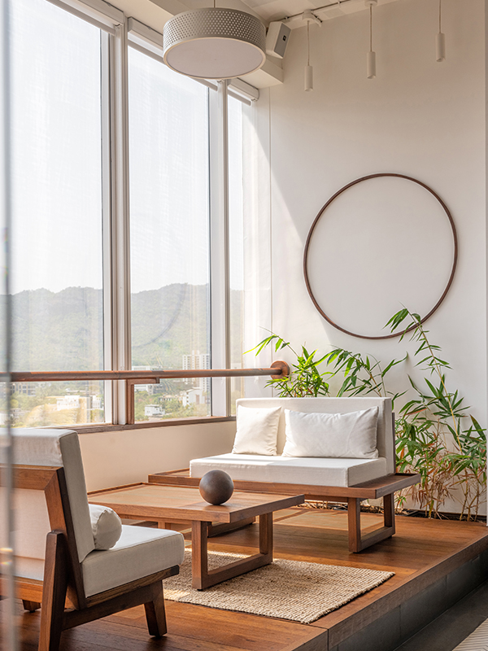
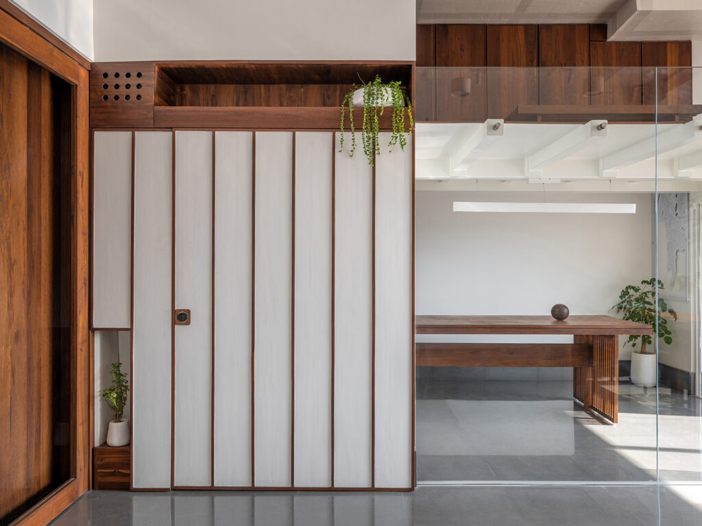
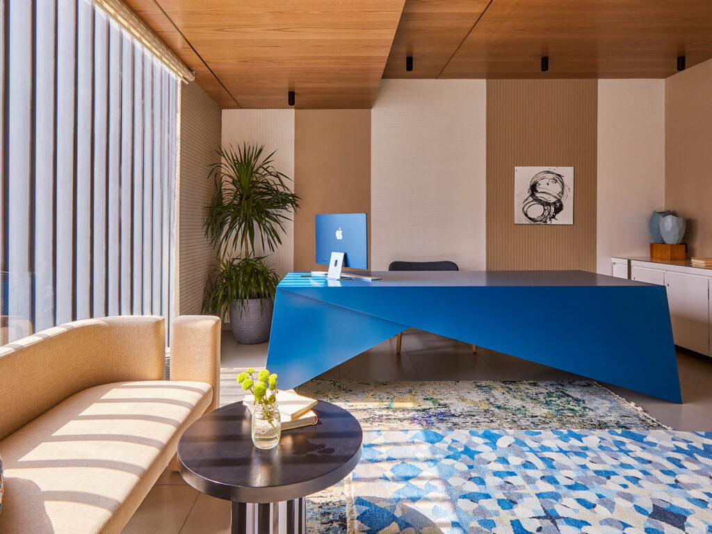
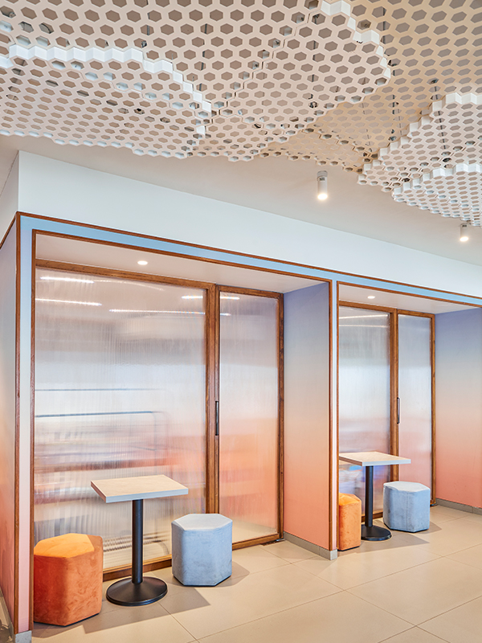
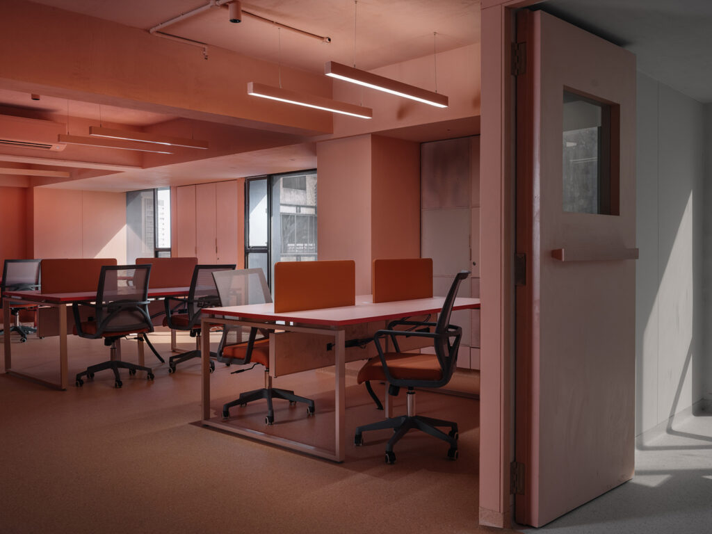

Home Decor
Designed by architect Tanzeem Sarguroh, 811 is a 40-square metre workspace designed using the 100-year-old reclaimed teak wood salvaged from demolished structures of old Bombay built during the British era. Striving for the balance of form, function and simplicity, an open layout is adopted while working with natural materials and unconfined natural light. Matching the objectives of minimalism and practical sustainability, the design philosophy leans towards the Japandi aesthetic a coalescence of Japanese and Scandinavian styles. The seamless flooring is sourced from Stone Casa while all the furniture has been designed in-house and customised.
Walls are left bare and sparse with bio-based wall paint, to emphasise that the space is defined by having only the minimum of essential elements rather than the accumulation of ornate objects. White walls and clutter-free furnishings let in and reflect natural light while allowing air to circulate freely throughout the space. To achieve an unobstructed view of the hills of Sanjay Gandhi National Park from the cabin, the mezzanine is designed to be supported by the ceiling instead of the floor and the glass is held up by studs forming a frameless glass box. This gave the opportunity to create a cantilevered folded metal staircase leading up to the mezzanine, thus reducing the visual mass that a bulky metal structure generally brings in. With earnest efforts towards embracing Wabi-Sabi, the upcycled wood with polishing from Rubio Monocoat is used without any inhibitions towards inconsistent patterns, grains, colour variations or even knot and nail holes.
Helmed by Saniya Kantawala, Soch is an office space that embodies the balance between comfort, efficiency as well as aesthetics. Designed to offer maximum functionality within the limited real estate space, the office expanse offers a warm and comfortable vibe for a young, millennial workforce. Spanning over 3,500-square feet, it is divided into a central reception zone, with a dedicated staff area on one side and a directors zone on the other. The colours of sunrise create a vibrant yet elegant colour palette, and a uniform flooring pattern adorned with rugs from Cocoon Rugs creates a seamless flow of spaces throughout the office.
Cushioned along the windows, community bar-style seating and meeting pods are created to foster community building within the team as well as promote casual conversations. The combination of meeting rooms, as well as meeting pods, allows for a formal as well as informal meeting environment amongst the workforce. Flanked onto the ceiling, the installation is created as an individual hexagonal meshwork of aluminium, layered together to form a stunning art piece. The parametric installation is a collaborative effort of Saniya Kantawala and Mutation Lab with lighting fixtures from Hatsu. The Soch office creates a space that fosters workspace wellbeing by incorporating plants of a variety of sizes and artefacts from ZA Works to accentuate spaces around the office.
TVOI Office is the primary workspace of a newly established digital news and media platform in Ahmedabad. The clients brief to Studio Saransh suggested the building of a space fit for a team of young and upcoming media enthusiasts, with a unique experiential value that inspires undaunted thought and promotes transparency. The 4,100-square feet office is a spatial experiment in colour. It is inspired by the RGB colour format, where spaces are colour blocked using these tints from Asian Paints, combined with selected bursts of fresh white to cut through the saturated tones. The resultant impact of this use of colour is experienced while walking through the office, moving from one visual world to another, and travelling through different experiences in the same space. The surprise and visual relief from the monotony of one colour are felt upon finding an opening, glancing into an adjacent space, dipped in a different colour.
The interior elements attempt to inspire interaction and discussion among the office members. The subtle flooring is sourced from Tarkett while the soft furnishings are acquired from Decor. The storage and partition elements are treated with a grid made of metal and fabric panels, inviting posters and notes to be put up, that add to the conversations and personalisation of workstations around. Among the storage units, negative pockets are formed which can act as a temporary seat for one to occupy and create a small group of discussion merely with the pulling of a few chairs around it.